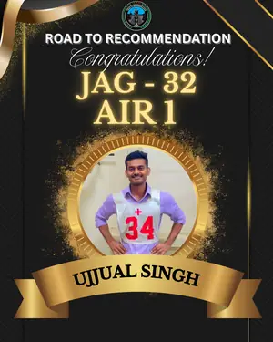
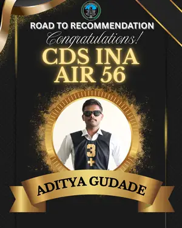
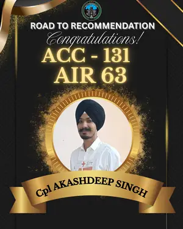

Everyone says “Be yourself.”
But do you know who you are?
1-on-1 psychological dossier audit and personal interview profiling for NDA, CDS, AFCAT & JAG. Live online or in our Patel Nagar Delhi studio.
- 580+candidates recommended
- 5.0★147 Google reviews
- 15candidates max in Delhi studio (offline)
Message us on WhatsApp · Instant batch dates, fees & call scheduling

They were stuck too. Now they're recommended.
NDA, CDS, AFCAT, SSC Tech, JAG and more. Four AIR 1s among them.









Swipe sideways to see more verified recommendations →
Why good candidates keep getting screened out
SSB psychology is not a test of knowledge. It is a forensic read of your subconscious habits under pressure.
No Mass Lecture Halls
In typical 150-student coaching factories, nobody reads your TAT or PIQ. At R2R, every single story and response is audited across the table with you.
Psychologists Spot Templates in 30s
Canned "ideal leader" tropes fall apart under board cross-examination. We deconstruct your actual life history so your answers project authentic subconscious truth.
3-Way Triangulation Alignment
When your PIQ, psychology tests, and interview tell contradictory stories, the conference notices immediately. We align all three testing techniques before you face the board.
 1-on-1 Dossier Audit
1-on-1 Dossier Audit
 15-Seat Intimate Cohort
15-Seat Intimate Cohort
The 15-Day Mentorship Roadmap
15 intensive studio days deconstructing every stage of the SSB before you face the selection board.
Screening & PPDT Group Dynamics

Overcoming the chaos: 14-candidate fish market without shouting or reciting canned scripts.
- OIR speed drilling and pattern recognition secrets
- 30-second picture perception and narrative writing
- Subtle group entry cues and non-verbal leadership
- Simulated with physical chest numbers under board timing
Psychology: TAT, WAT, SRT & SD

All 12 TAT stories, 60 WAT associations, and 60 SRTs written under real times reviewed line by line.
- Deconstructing coached hero tropes and fake templates
- Aligning your subconscious responses with your real life
- Forensic Self-Description (SD) structuring across 5 perspectives
- 1-on-1 dossier breakdown across the desk with Shashank Rai
GTO Ground Tasks & Tactical Influence
Leading through cooperation: Group tasks, obstacle bridging, and boardroom discourse.
- Progressive Group Tasks (PGT), HGT, and Command Tasks
- Group Discussion (GD) & Group Planning Exercise (GPE)
- Cantilever logic structuring and authoritative delivery
- In-person ground dynamics in the Delhi Patel Nagar studio
Personal Interview & Conference
Forensic PIQ cross-examination with Advocate Rahul Sharma and full conference consistency check.
- Face-to-face mock interviews built line by line from your PIQ
- Rapid-fire stress handling and spontaneous defense
- Triangulation: ensuring Psych, GTO, and Interview tell one truth
- Pre-board mental readiness and psychological calm
Your mentors were recommended themselves
Guided exclusively by mentors who cleared the SSB multiple times. Zero commercial lecturers.
Shashank Rai
Founder · AIR 19 CDS-1 · 2x RecCleared NDA, CDS, AFCAT. Subconscious narrative & psychological testing specialist.
Leads 1-on-1 TAT/WAT/SRT deconstruction, PPDT screening, and personal interview.

Neha Vashisth
Thrice Recommended · MHA, TISSDRDO & Air Force background. Master's in Health Administration (TISS Mumbai).
Specializes in authentic psychological profiling and Self Description (SD) forensic audit.

Rahul Sharma
JAG-35 AIR 9 · High Court AdvocatePracticing advocate specializing in Armed Forces Tribunal litigation.
Conducts aggressive PIQ forensic cross-examination and stress-interview simulations.
Most of our recommended candidates were repeaters
Over 78% of our 580+ recommended candidates had faced screen-outs or conference-outs before joining R2R.
“Facing 8 straight screen-outs made me feel like the defence doors were closed forever. Truly indebted to R2R for turning 8 rejections into a recommendation.”Read Yash's full story →
“Rai spent through all my 12 TAT stories and WAT responses line by line. Instead of copied coaching formula, he showed me how to own my actual life story.”Read Ankit's full story →
“After 4 screen-outs and 2 conference-outs, I had lost faith in coaching academies. Neha Ma'am and Shashank Sir gave me brutally honest, constructive 1-on-1 feedback.”Read Nitu's full story →
Upcoming batches & fee structure
Batches start every 15 days. Online live or in-person at Patel Nagar, New Delhi.
15-Day Online Mentorship Studio
Join from anywhere in India via Zoom / Google Meet
₹12,000 all-inclusive
Individual modular batches (Psychology, PIQ, Mock Interview) also available.
- Timings
- Morning & Evening live cohorts
- Starts
- Batches commence every 15 days
- Live PPDT & TAT simulation with real-time screen sharing
- 1-on-1 video mock interviews with Advocate Rahul Sharma
- Complete session recordings provided, yours to keep
- Small interactive live cohorts with 1-on-1 dossier feedback
Ready to enrol? Enrol directly on course portal →
15-Day Delhi Classroom Studio
Patel Nagar Studio (2 min walk from Patel Nagar Metro, Blue Line)
₹18,000 tuition
₹2,000 seat reservation adjusted against tuition fee.
- Timings
- 9:00 AM – 5:00 PM daily (Intensive)
- Starts
- Batches commence every 15 days
- Stay
- Budget student PGs within 3-minute walking distance
- Real ground dynamics: PGT, HGT, and Command Tasks in person
- Face-to-face boardroom PIQ mock interviews with Rahul Sharma
- Line-by-line psychological dossier audit across the desk
- Strictly capped at 15 candidates — physical classroom cap
Have questions about stay? Chat with admissions team →
Questions candidates ask before joining
I've been screened out or conferenced out multiple times. Is it worth trying again?
Yes. Over 78% of our 580+ recommended candidates were repeaters. Yash Tanwar was screened out 8 times before his Coast Guard recommendation. On the first WhatsApp call, we analyze your previous attempts to pinpoint exactly where you got stuck.
Do you teach memorised psychological story templates?
Strictly zero rote templates. SSB psychologists detect coached or copied tropes within 30 seconds. R2R trains you in authentic projection based on your actual life events and subconscious truths.
Should I choose Online Live or the Delhi Studio?
Choose Delhi if you can travel for 15 days and want physical ground tasks, obstacle bridging, and in-person boardroom interviews. Choose online if you are in college, working, or based outside Delhi. Both receive 1-on-1 dossier audit from the same mentors.
My English is average. Will that hold me back?
No. The board looks for clear thinking, emotional stability, and collaborative presence, not sophisticated vocabulary or accent. We help you structure your thoughts clearly and speak with conviction.
Where is the Delhi classroom, and what about accommodation?
Our studio is located in Patel Nagar, New Delhi, a 2-minute walk from Patel Nagar Metro Station (Blue Line). Clean, budget-friendly student PGs are available within 3-minute walking distance.
Tell us where you got stuck last time
Message us on WhatsApp. Our admissions team will connect with you to review your attempts and recommend the right cohort.
Chat with us on WhatsApp